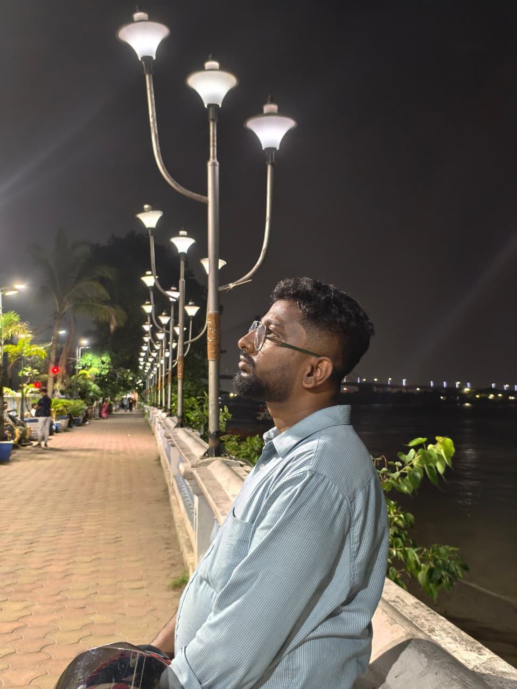

Machine Learning
& Deep Learning
Learning representations and developing intelligent models for complex data-driven problems.
MODEL · LEARN · IMPROVEDr. Jayanta
Paul's
INSTITUTE POST-DOCTORAL FELLOW · IIT KHARAGPUR
I explore intelligent systems through machine learning, deep learning, computer vision and natural language processing, with research spanning multimodal social media content analysis.
A LITTLE INTRODUCTION

BEYOND THE SCREEN / PERSONAL MOMENTI am Dr. Jayanta Paul, an academic researcher working across artificial intelligence and data-driven technologies.
I completed my PhD in Computer Science & Engineering at the Indian Institute of Engineering Science and Technology (IIEST), Shibpur. My thesis, “Deep Learning-Driven Framework for Multimodal Social Media Content Analysis”, focused on deep learning approaches to multimodal social media data.
My academic interests include machine learning, deep learning, computer vision and natural language processing. Alongside research, I have contributed to teaching, laboratory assistantships, academic societies and technical events.
My research interests span interconnected areas of AI, with a focus on learning from diverse data and developing systems for practical challenges.
Learning representations and developing intelligent models for complex data-driven problems.
MODEL · LEARN · IMPROVEVisual understanding, face recognition, emotion analysis and medical image segmentation.
SEE · UNDERSTAND · ANALYSELanguage understanding, social media analytics and transformer-based architectures.
LANGUAGE · CONTEXT · MEANINGCombining text, images, videos and facial cues to build richer content analysis systems.
TEXT · IMAGE · VIDEOResearch on offensive content, ideological bias, unethical content and explainable AI.
FAIRNESS · SAFETY · TRUSTExploring deep learning approaches for medical imaging and impactful healthcare applications.
AI · HEALTH · IMPACTFrom doctoral research to postdoctoral work and teaching, each chapter has added a new perspective to my academic journey.
Indian Institute of Technology Kharagpur, West Bengal, India.
Postdoctoral fellowship at the AI4ICPS I Hub Foundation, IIT Kharagpur.
Institute of Engineering and Management, Kolkata, West Bengal.
Thesis defense completed on 27 November 2025; PhD awarded on 19 December 2025.
Laboratory assistantships in Introduction to Computing (2019–2024), Machine Learning (2021–2023), Artificial Intelligence (2022–2024), Software Engineering (2022–2024) and Soft Computing (2021–2024).
THE CENTRAL QUESTION
The research focused on designing deep learning models to understand and analyse text, images, videos and facial expressions on social media. It explored challenges including hate/offensive content detection, video summarization, and face and emotion analysis.
A selection of journal and conference publications listed in the supplied CV. Publication status is retained as stated in that document.
Abhijit Mitra, Souvik Mondal, Anubhav Bhattacharya, Jayanta Paul and Jaya Sil · Volume 200, Article 115373.
Abhijit Mitra, Rajdeep Majumdar, Rivujit Das, Arghyadeep Saha, Jayanta Paul, Souvik Mondal and Jaya Sil · Volume 20, Issue 3, Article 38, pages 1–69.
Jayanta Paul, Anuska Roy, Abhijit Mitra and Jaya Sil · Volume 614, Article 128852.
Abhijit Mitra, Jayanta Paul, Tanis Ahamed, Sagar Basak and Jaya Sil · Volume 324, Article 113896.
Jayanta Paul, Siddhartha Mallick, Abhijit Mitra, Anuska Roy and Jaya Sil · Volume 19, Issue 3, Article 66, pages 1–30.
Jayanta Paul, Abhijit Mitra, Divyanshu Kulhadiya, Tejas Pawar, Angshuman Roy and Jaya Sil · Volume 258, pages 3436–3446.
Jayanta Paul, Ahel Das Chatterjee, Devtanu Misra, Sounak Majumder, Sayak Rana, Malay Gain, Anish De, Siddhartha Mallick and Jaya Sil · Volume 83, Issue 30, pages 75243–75292.
Siddhartha Mallick, Jayanta Paul and Jaya Sil · Volume 559, Article 126798.
Rajat Subhra Bhowmick, Rahul Indra, Isha Ganguli, Jayanta Paul and Jaya Sil · Volume 4, Issue 2, Article 28, pages 1–24.
Rajat Subhra Bhowmick, Isha Ganguli, Ananya Paul, Jayanta Paul and Jaya Sil.
Selected journal articles are shown here. The CV also lists additional journal articles, manuscripts under review or communicated, conference papers and book chapters.
A foundation in computer science, followed by advanced study and research in intelligent systems.
Computer Science & Engineering
IIEST ShibpurThesis: Deep Learning-Driven Framework for Multimodal Social Media Content Analysis. Defense: 27 November 2025 · Awarded: 19 December 2025.Computer Science & Engineering
IIEST ShibpurComputer Science & Engineering
Maulana Abul Kalam Azad University of Technology, West BengalRecognition, academic service and community contributions that have shaped the journey.
Lecture on “Mobile & Digital Trace Data Using Mobility Patterns for Urban Planning” during the Residential Training Programme on Big Data, AI, and ML using Python for ISS Probationers, funded by MoSPI, Government of India.
CHANAKYA Postdoctoral Fellow at the Department of Artificial Intelligence and AI4ICPS Innovation Hub, IIT Kharagpur.
Institute Fellowship as a PhD research scholar at IIEST, Shibpur.
“The Innovative Power of Machine Learning in Image Processing”, Faculty Development Programme, MCKV Institute, Liluah, Howrah.
Quadcopter making, zonal round, under ARK Techno Solutions and robokart.com (IIT Madras).
Qualified the Graduate Aptitude Test in Engineering.
HAVE AN IDEA OR A RESEARCH QUESTION?
Open to research collaborations, academic partnerships, AI/ML projects, speaking opportunities and industry research connections.
Write an email